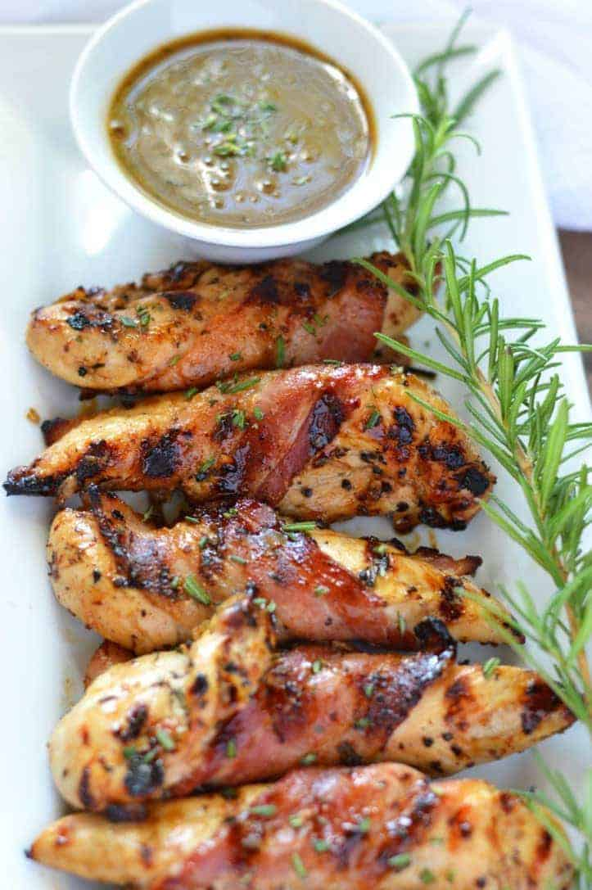

Home
Grilled chicken with rosemary and bacon

Description
This recipe comes together so easily with minimal prep. Grilled chicken breasts with bacon, garlic powder, and rosemary are cooked to perfection. What could be better? I'm always thinking up easy rosemary recipes since my yard has five huge bushes of rosemary. Great with grilled vegetables and rice. Enjoy!
Ingredients
- 4 teaspoons garlic powder
- 4 skinless, boneless chicken breast halves
- salt and pepper to taste
- 4 sprigs fresh rosemary
- 4 thick slices bacon
Steps
- Preheat an outdoor grill for medium-high heat, and lightly oil the grate.
- Sprinkle 1 teaspoon garlic powder on each chicken breast and season with salt and pepper. Lay one rosemary sprig on each chicken breast. Wrap bacon around the chicken to hold the rosemary on. Secure bacon with a toothpick or an additional thick rosemary stem.
- Cook chicken breasts until no longer pink in the center and the juices run clear, about 8 minutes per side. An instant-read thermometer inserted into the center should read at least 165 degrees F (74 degrees C). Stay near the grill to combat any flare-ups from the bacon. Remove the toothpicks before serving.